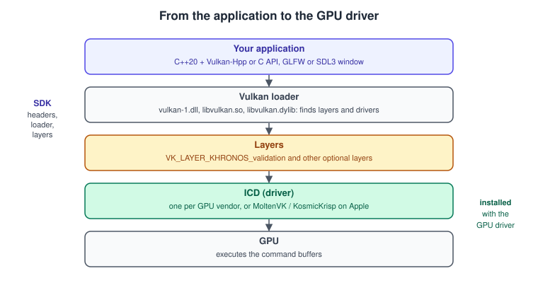
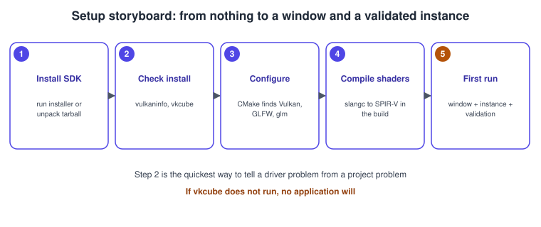

Setting Up the Vulkan SDK and Toolchain
|
This content was generated with the assistance of AI and should be verified against the official documentation before being relied on in production. |
A Vulkan program needs four things from outside your source code: the headers that declare the API, the loader that finds a driver at run time, a validation layer that tells you what you did wrong, and a shader compiler that produces SPIR-V. A fifth, a window, comes from a library such as GLFW or SDL3. The LunarG Vulkan SDK bundles the first four and the tools around them, which makes it the reference setup used by the Khronos tutorial and by this section. This page installs it, verifies it, builds a complete CMake project and explains the choices (C API or Vulkan-Hpp, linking the loader or loading it dynamically, hand-written or generated instance creation) that older books do not cover.
The general concepts behind this page are in Explicit vs Implicit Graphics APIs.
The facts were checked in November 2026. The version documented is the LunarG SDK 1.4.363.0 (29 September 2026) for Windows,
Linux and macOS, which contains Vulkan headers of the 1.4.3xx series. The code is C++20 with Vulkan-Hpp (the RAII layer in
vulkan_raii.hpp), GLFW or SDL3, and Slang shaders; GLSL and HLSL alternatives are shown where they differ. On Apple platforms
Vulkan runs through MoltenVK or the newer KosmicKrisp driver, which needs macOS 26 or newer (see
Vulkan on Apple: MoltenVK and KosmicKrisp).
You need a GPU and driver that support Vulkan 1.3 or newer for the running example (see
Vulkan Versions, Profiles and Extensions), a C++20 compiler (GCC,
Clang or Visual Studio 2022) and CMake. General C++ build practice is covered in
C++ Build and Tooling and editors in
C++ IDEs and Tools.
This page produces the starting point of the Vulkan Bookshelf: a project that opens a window, creates an instance with validation and lists the GPUs. The next steps are in Instance, Loader and Layers, Validation and Debug Utils and, for the triangle, Bookshelf 1: From a Triangle to a Textured Book.
The pieces and how they connect

-
The loader is a library (
vulkan-1.dllon Windows,libvulkan.so.1on Linux,libvulkan.dylibin the macOS SDK). It exports the Vulkan functions, reads the manifests of installed drivers and layers, loads the ones you enable and forwards each call through the chain of layers to the driver. The same loader serves every GPU in the machine. -
Layers are optional libraries inserted between the application and the driver.
VK_LAYER_KHRONOS_validationis the one you always use during development; others add frame capture, API dumps or profile emulation. -
The ICD (installable client driver) is the Vulkan implementation of one GPU vendor, installed with the graphics driver (or MoltenVK or KosmicKrisp on macOS). The SDK does not contain the drivers of Windows and Linux GPUs.
-
The headers only declare functions. You either link the loader at build time (
Vulkan::Vulkan) or ask the system for the function pointers at run time (volk, or the Vulkan-Hpp dynamic dispatcher).
The details of manifests, layer ordering and the environment variables that control them are on Instance, Loader and Layers.
What is in the SDK
The SDK is a collection, not a single library. The parts used in this section:
| Component | Use |
|---|---|
Headers and loader |
|
Validation layer |
|
|
A GUI and command-line tool that configures layers and the profiles layer without changing your code. |
|
Lists every instance and device property and extension; draws a spinning cube to prove the whole path works. |
Shader compilers |
|
SPIR-V tools |
|
Debugging and capture |
GFXReconstruct (capture and replay), the API dump layer and the Vulkan Profiles tools ( |
Documentation |
The SDK documentation is online at |
Installing the SDK
Windows
-
Download the installer from LunarG and run it. The installer sets the
VULKAN_SDKenvironment variable and adds the SDKBindirectory toPATH; open a new terminal afterwards so that both are visible. -
Install Visual Studio 2022 with the "Desktop development with C++" workload (C++20 needs a version newer than Visual Studio 2019) and CMake, which comes with it.
-
Install libraries with a package manager such as vcpkg (
vcpkg install glfw3 glm). -
Update the graphics driver from your GPU vendor: the loader finds the ICD through the registry entries the driver installs.
Linux
-
Download the tarball of the SDK, extract it into a directory such as
~/vulkanSDK/1.4.363.0, and make a symbolic link nameddefaultthat points to it, so that you can switch versions by changing one link. -
Source the environment script in every shell, for example from
~/.bashrc:source ~/vulkanSDK/default/setup-env.sh. It setsVULKAN_SDKand the search paths for tools, libraries and layers so that the loader finds the SDK layers. -
Install the build dependencies with the package manager: a C++20 compiler,
cmake,ninja-build, the X11 development packages (libxxf86vm-dev,libxi-devon Debian and Ubuntu),libglfw3-devandlibglm-dev(the names differ on Fedora and Arch). -
Make sure the vendor driver is installed (Mesa for AMD and Intel, the proprietary or open driver for NVIDIA). The SDK does not contain GPU drivers.
Distribution packages for the loader, the headers and the validation layer also exist. They are convenient for continuous integration, but they can lag behind the SDK, which gives you headers and layers of one consistent release.
macOS
-
Download the macOS SDK installer from LunarG and run it. It contains the loader, MoltenVK, the validation layer and, since 1.4.363, KosmicKrisp, a Mesa-based Vulkan 1.4 conformant driver that runs on Metal 4 and needs macOS 26 or newer.
-
Install Xcode (for the compiler and the Metal toolchain) and Homebrew packages such as
glfwandglm. -
Source the environment script of the SDK (
setup-env.shin the SDK directory) so thatVULKAN_SDKand the loader paths are set. -
Because macOS drivers implement the portability subset of Vulkan, your application must enable
VK_KHR_portability_enumerationon the instance and set a flag, or the loader will report no devices. The example below does this.
Verify the installation before writing code
Run two programs before anything else. They tell a driver problem from a project problem in a minute.
# Is the SDK visible?
echo "$VULKAN_SDK"
# Does the loader find a driver, and what does the GPU support? (shortened output)
vulkaninfo --summary
# Does a real swapchain and a real frame work? (a spinning cube from the SDK bin directory)
vkcubevulkaninfo --summary prints one block per device with its name, type and apiVersion. If a GPU you expect is missing, the
driver is not installed or the loader cannot find its manifest (see the troubleshooting table below). If vkcube runs and
your program does not, the problem is in your program.

Choosing the building blocks
| Decision | Options | Recommendation for this section |
|---|---|---|
API flavour |
The C API ( |
Vulkan-Hpp RAII: every object is destroyed in the right order when it goes out of scope, designated initialisers keep structures readable, and |
Function loading |
Link the loader ( |
Let |
Window and input |
GLFW or SDL3. |
GLFW for the shortest code; SDL3 when you also need gamepads, audio and file dialogs. The Bookshelf keeps the window code in one file so that either can be used. |
Shading language |
Slang, GLSL, HLSL. |
Slang, the primary language of the Khronos Vulkan tutorial, hosted by Khronos since November 2024 (release v2026.20 of 17 October 2026 at the time of writing). GLSL and HLSL remain fully supported through glslc and dxc. |
Instance and device creation |
By hand or with vk-bootstrap. |
By hand for the first pages, so that every structure is seen once; vk-bootstrap afterwards if you want less code. |
Memory |
Raw |
VMA 3.5.0 (October 2026), introduced in Memory: Heaps, Types and VMA. |
Loading functions: loader, volk or the dispatcher
The Vulkan headers declare function prototypes only, so the program has to obtain the addresses. The Vulkan Guide describes two ways:
direct linking to the loader at build time, and indirect linking, which asks the system for the loader at run time with
dlopen and dlsym (or LoadLibrary and GetProcAddress) and builds its own table of function pointers. Indirect linking lets
the program fail gracefully when the loader is missing, and volk is an open-source meta-loader that does the work for you.
#define VOLK_IMPLEMENTATION // in exactly one source file, when using the header-only form
#include <volk.h>
int main(void) {
if (volkInitialize() != VK_SUCCESS) {
/* no Vulkan loader on this machine: show a message and exit */
return 1;
}
/* ... create the instance with vkCreateInstance ... */
VkInstance instance = /* the created instance */ VK_NULL_HANDLE;
volkLoadInstance(instance); // instance-level and device-level entry points of all enabled extensions
/* ... create the device with vkCreateDevice ... */
VkDevice device = /* the created device */ VK_NULL_HANDLE;
volkLoadDevice(device); // load the device functions directly from the driver, skipping the dispatch trampolines
}Source: Vulkan Guide: Loader and volk.
volkLoadDevice is the reason people use volk in engines: the function pointers it loads go directly to the driver (or to the
first layer) instead of through the loader’s dispatch code, which saves a small amount of CPU per call. With Vulkan-Hpp the
equivalent is the vk::detail::DispatchLoaderDynamic. The RAII classes use their own dispatchers and need no such setup. The
older books (VCB chapter 1 in particular) load every function by hand with vkGetInstanceProcAddr; a meta-loader or the
bindings make that code unnecessary.
The CMake project
The layout of the Bookshelf repository is deliberately small:
bookshelf/
CMakeLists.txt
src/main.cpp
shaders/book.slang
assets/ (bookshelf.glb and textures, see below)cmake_minimum_required(VERSION 3.24)
project(VulkanBookshelf LANGUAGES CXX)
set(CMAKE_CXX_STANDARD 20)
set(CMAKE_CXX_STANDARD_REQUIRED ON)
set(CMAKE_CXX_EXTENSIONS OFF)
# 1. Vulkan: headers (and the loader, if we link it) from the SDK found through VULKAN_SDK.
# Components ask CMake to locate the tools from the SDK as well.
find_package(Vulkan 1.3 REQUIRED COMPONENTS glslc)
# 2. Window library.
find_package(glfw3 REQUIRED)
# For SDL3 instead: find_package(SDL3 REQUIRED CONFIG) and link SDL3::SDL3
# 3. Slang compiler from the SDK (the tutorial shows find_package(slang) as an alternative for the library).
find_program(SLANGC slangc HINTS "$ENV{VULKAN_SDK}/bin" "$ENV{VULKAN_SDK}/Bin" REQUIRED)
add_executable(bookshelf src/main.cpp)
target_link_libraries(bookshelf PRIVATE Vulkan::Headers glfw)
# Vulkan-Hpp: designated initialisers need the constructors off; load the loader at run time.
target_compile_definitions(bookshelf PRIVATE
VULKAN_HPP_NO_CONSTRUCTORS
GLFW_INCLUDE_NONE)
# 4. Shaders: compile every .slang file to SPIR-V next to the executable, whenever the source changes.
set(SHADER_SRC ${CMAKE_SOURCE_DIR}/shaders/book.slang)
set(SHADER_OUT ${CMAKE_BINARY_DIR}/shaders/book.spv)
add_custom_command(
OUTPUT ${SHADER_OUT}
COMMAND ${CMAKE_COMMAND} -E make_directory ${CMAKE_BINARY_DIR}/shaders
COMMAND ${SLANGC} ${SHADER_SRC} -target spirv -o ${SHADER_OUT}
DEPENDS ${SHADER_SRC}
COMMENT "slangc book.slang")
add_custom_target(shaders DEPENDS ${SHADER_OUT})
add_dependencies(bookshelf shaders)
# GLSL alternative with the SDK's glslc (needs the glslc component above):
# COMMAND Vulkan::glslc ${CMAKE_SOURCE_DIR}/shaders/book.vert -o ${CMAKE_BINARY_DIR}/shaders/book.vert.spv
# HLSL alternative with dxc:
# COMMAND dxc -spirv -T vs_6_0 -E main book.hlsl -Fo book.vert.spv
# Make the program find its shaders and assets.
target_compile_definitions(bookshelf PRIVATE
BOOKSHELF_SHADER_DIR="${CMAKE_BINARY_DIR}/shaders"
BOOKSHELF_ASSET_DIR="${CMAKE_SOURCE_DIR}/assets")What the file does and why:
-
find_package(Vulkan 1.3 REQUIRED COMPONENTS glslc)uses theVULKAN_SDKenvironment variable (or system paths) to find the headers, the loader and theglslccompiler, and defines the targetsVulkan::Vulkan,Vulkan::HeadersandVulkan::glslc. The version number is the version of the headers found, so it fails early with a message when the headers are too old. -
The program links only
Vulkan::Headers, not the loader, becausevk::raii::Contextloads the loader at run time. ReplaceVulkan::HeaderswithVulkan::Vulkanif you use the C API and link directly. -
VULKAN_HPP_NO_CONSTRUCTORSremoves the generated constructors of the structures so that C++20 designated initialisers work (vk::ApplicationInfo{.pApplicationName = "x"}). It must be defined for every translation unit that includes the header. -
The shader rule runs
slangcat build time. Compiling shaders in the build means a wrong shader breaks the build, not the program after it started.-target spirvselects SPIR-V output. See Shaders, SPIR-V and Shading Languages for entry points, profiles and the GLSL and HLSL commands in detail. -
The C++20 module of Vulkan-Hpp (
vulkan.cppm) is available, and the tutorial shows how to build it with CMake, but it is labelled experimental; this section uses ordinary headers.
On macOS the CMake file is the same; the differences are in the instance creation code below and in the environment (the SDK’s
environment script). A shortcut for the Bookshelf assets is the shared file bookshelf.glb; its PNG
textures can be converted to KTX2 with toktx or ktx create when the texture pages need them.
A first program: window, instance, validation
The program below is complete. It opens a GLFW window without an OpenGL context, creates a Vulkan instance with the extensions GLFW needs, turns on the validation layer when it is installed, enables portability enumeration on Apple platforms, and prints every GPU.
// src/main.cpp - Vulkan Bookshelf, step 0: window, instance with validation, list of GPUs.
#include <vulkan/vulkan_raii.hpp>
#include <GLFW/glfw3.h>
#include <algorithm>
#include <cstdint>
#include <cstring>
#include <iostream>
#include <span>
#include <string_view>
#include <vector>
namespace {
bool hasLayer(const std::vector<vk::LayerProperties>& layers, std::string_view name) {
return std::ranges::any_of(layers, [&](const vk::LayerProperties& l) { return name == l.layerName.data(); });
}
bool hasExtension(const std::vector<vk::ExtensionProperties>& list, std::string_view name) {
return std::ranges::any_of(list, [&](const vk::ExtensionProperties& e) { return name == e.extensionName.data(); });
}
} // namespace
int main() {
// --- Window: no client API, because Vulkan draws into a surface, not into a context.
if (!glfwInit()) { std::cerr << "GLFW could not start\n"; return 1; }
if (!glfwVulkanSupported()) { std::cerr << "GLFW found no Vulkan loader\n"; return 1; }
glfwWindowHint(GLFW_CLIENT_API, GLFW_NO_API);
GLFWwindow* window = glfwCreateWindow(960, 540, "Vulkan Bookshelf", nullptr, nullptr);
if (!window) { std::cerr << "no window\n"; return 1; }
try {
vk::raii::Context context; // loads the Vulkan loader at run time
// --- Extensions: whatever GLFW needs for surfaces, plus portability on Apple.
std::uint32_t glfwCount = 0;
const char** glfwNames = glfwGetRequiredInstanceExtensions(&glfwCount);
std::vector<const char*> extensions(glfwNames, glfwNames + glfwCount);
const auto available = context.enumerateInstanceExtensionProperties();
vk::InstanceCreateFlags flags{};
if (hasExtension(available, VK_KHR_PORTABILITY_ENUMERATION_EXTENSION_NAME)) {
// MoltenVK and KosmicKrisp expose a portability subset: without this the loader hides them.
extensions.push_back(VK_KHR_PORTABILITY_ENUMERATION_EXTENSION_NAME);
flags |= vk::InstanceCreateFlagBits::eEnumeratePortabilityKHR;
}
if (hasExtension(available, VK_EXT_DEBUG_UTILS_EXTENSION_NAME)) {
extensions.push_back(VK_EXT_DEBUG_UTILS_EXTENSION_NAME); // used by the next pages
}
// --- Layers: validation only when present, so a machine without the SDK still starts.
std::vector<const char*> layers;
if (hasLayer(context.enumerateInstanceLayerProperties(), "VK_LAYER_KHRONOS_validation")) {
layers.push_back("VK_LAYER_KHRONOS_validation");
} else {
std::cerr << "Validation layer not found: install the SDK and check VULKAN_SDK\n";
}
// --- Instance. 1.3 is the minimum of the running example.
const std::uint32_t loaderVersion = context.enumerateInstanceVersion();
const std::uint32_t wanted = std::min<std::uint32_t>(loaderVersion, vk::ApiVersion14);
if (wanted < vk::ApiVersion13) { std::cerr << "Vulkan 1.3 loader required\n"; return 1; }
const vk::ApplicationInfo app{
.pApplicationName = "Vulkan Bookshelf",
.applicationVersion = VK_MAKE_API_VERSION(0, 0, 1, 0),
.pEngineName = "Bookshelf",
.engineVersion = VK_MAKE_API_VERSION(0, 0, 1, 0),
.apiVersion = wanted,
};
const vk::InstanceCreateInfo info{
.flags = flags,
.pApplicationInfo = &app,
.enabledLayerCount = static_cast<std::uint32_t>(layers.size()),
.ppEnabledLayerNames = layers.data(),
.enabledExtensionCount = static_cast<std::uint32_t>(extensions.size()),
.ppEnabledExtensionNames = extensions.data(),
};
vk::raii::Instance instance(context, info);
// --- Surface: a GLFW helper creates the platform surface (Win32, Wayland, X11, Metal ...).
VkSurfaceKHR rawSurface = VK_NULL_HANDLE;
if (glfwCreateWindowSurface(static_cast<VkInstance>(*instance), window, nullptr, &rawSurface) != VK_SUCCESS) {
std::cerr << "could not create the surface\n";
return 1;
}
vk::raii::SurfaceKHR surface(instance, rawSurface); // takes ownership: destroyed with the RAII object
// --- GPUs.
for (const vk::raii::PhysicalDevice& gpu : instance.enumeratePhysicalDevices()) {
const auto props = gpu.getProperties();
std::cout << props.deviceName.data() << " Vulkan "
<< VK_API_VERSION_MAJOR(props.apiVersion) << '.' << VK_API_VERSION_MINOR(props.apiVersion)
<< " type " << vk::to_string(props.deviceType) << '\n';
}
while (!glfwWindowShouldClose(window)) glfwPollEvents();
} catch (const vk::SystemError& e) {
std::cerr << "Vulkan error: " << e.what() << '\n'; // for example the instance could not be created
glfwDestroyWindow(window);
glfwTerminate();
return 1;
}
glfwDestroyWindow(window);
glfwTerminate();
}Source: GLFW: Vulkan guide, Vulkan Guide: Portability initiative and VK_KHR_portability_enumeration reference page.
Points to notice:
-
The
vk::raiiobjects are destroyed in reverse order of their declaration, so the surface goes before the instance, and the window is destroyed after them. Thetryblock scopes the Vulkan objects; do not callglfwTerminatewhile they live. -
Without
GLFW_NO_API, GLFW creates an OpenGL context for the window, which cannot be combined with a Vulkan surface. -
On Windows the program needs no flags. On Linux GLFW returns the surface extensions of the window system in use (X11 or Wayland). On macOS it returns the Metal surface extension.
-
wantedtakes the lower of the loader’s version and 1.4. Request the highest version you can use, not the highest that exists (see Vulkan Versions, Profiles and Extensions). -
The
VK_EXT_debug_utilsextension is enabled here only so that the messenger that prints validation messages can be added in Validation and Debug Utils; the instance itself is explained in Instance, Loader and Layers.
The same with SDL3
For SDL3 only the window and surface lines change:
#include <SDL3/SDL.h>
#include <SDL3/SDL_vulkan.h>
SDL_Init(SDL_INIT_VIDEO);
SDL_Window* window = SDL_CreateWindow("Vulkan Bookshelf", 960, 540, SDL_WINDOW_VULKAN);
Uint32 sdlCount = 0;
char const* const* sdlNames = SDL_Vulkan_GetInstanceExtensions(&sdlCount);
std::vector<const char*> extensions(sdlNames, sdlNames + sdlCount);
// ... same instance creation as above ...
VkSurfaceKHR rawSurface = VK_NULL_HANDLE;
if (!SDL_Vulkan_CreateSurface(window, static_cast<VkInstance>(*instance), nullptr, &rawSurface)) {
std::cerr << SDL_GetError() << '\n';
}
vk::raii::SurfaceKHR surface(instance, rawSurface);Two differences are worth remembering. SDL3 functions return a Boolean (true on success), not a Vulkan result, and
SDL_Vulkan_CreateSurface takes an optional allocator and returns the surface through a pointer, like GLFW. Both libraries take
care of the platform surface extension, which is why the Bookshelf never calls vkCreateWin32SurfaceKHR or its siblings itself
(see Window System Integration and the Swapchain).
A shader to prove the toolchain
The build above compiles shaders/book.slang. This small Slang file draws a triangle with positions in the shader; it is the shader
of the first Bookshelf step.
// shaders/book.slang - positions and colours are constants in the shader (replaced by a vertex buffer later).
struct VSOutput {
float4 position : SV_Position;
float3 color : COLOR0;
};
static const float2 kPositions[3] = { float2(0.0, -0.5), float2(0.5, 0.5), float2(-0.5, 0.5) };
static const float3 kColors[3] = { float3(1, 0, 0), float3(0, 1, 0), float3(0, 0, 1) };
[shader("vertex")]
VSOutput vertMain(uint vertexIndex : SV_VertexID) {
VSOutput output;
output.position = float4(kPositions[vertexIndex], 0.0, 1.0);
output.color = kColors[vertexIndex];
return output;
}
[shader("fragment")]
float4 fragMain(VSOutput input) : SV_Target {
return float4(input.color, 1.0);
}Source: Vulkan Tutorial and Slang user guide.
Check the result with the SPIR-V validator that comes with the SDK:
slangc shaders/book.slang -target spirv -o book.spv
spirv-val book.spv # prints nothing when the module is valid
spirv-dis book.spv | head # human-readable SPIR-VSource: LunarG: SDK documentation.
Instance and device creation helpers
Creating an instance, choosing a physical device and building a device takes about 150 lines of code on the first page that does
it. vk-bootstrap (a LunarG developer’s open-source library, https://github.com/charles-lunarg/vk-bootstrap) wraps these
steps in builders: vkb::InstanceBuilder for the instance with validation and a debug messenger, vkb::PhysicalDeviceSelector to
choose a GPU that meets a minimum version and feature set, and vkb::DeviceBuilder for the device, with vkb::SwapchainBuilder
for the swapchain. It is a legitimate shortcut for a game, and a poor way to learn, because it hides the structures that
the later pages explain. The Bookshelf writes the code by hand through the first two steps and then keeps the same function
signatures, so replacing them with vk-bootstrap is a local change.
Troubleshooting
| Symptom | Likely cause and fix |
|---|---|
|
No ICD is installed or the loader cannot find its manifest. Install or update the GPU driver. On macOS, enable portability enumeration, or run through the SDK so that its |
|
The requested |
|
The layer name is wrong or the layer manifests are not on the loader’s search path. Source |
|
An extension is not offered by the loader or the driver. Check the lists from |
|
GLFW found no Vulkan loader. Call |
Linker error: undefined reference to a |
You compile with |
The validation layer works from the SDK shell but not from the IDE |
The IDE does not inherit |
|
|
Compile error: "no matching constructor" for a |
|
Performance and robustness notes
-
Build with the validation layer enabled in development builds and disabled in release builds. The layer can slow a program down by a large factor, and the layer is not present on players' machines, so keep the code that enables it behind a flag.
-
Link and load the loader once. Creating several instances is legal but wasteful; creating one per window is a mistake.
-
Keep
VULKAN_SDK-dependent paths out of release builds: ship the shaders (as SPIR-V) with the game and do not runslangcon a player’s machine. -
Pin the SDK version in continuous integration, because header, layer and tool versions move together; update on purpose.
-
Test on at least one machine without the SDK: the loader and driver are all a player has.
What changed since the older books
| VPG (2016) and VCB (2017) | Now |
|---|---|
SDK 1.0.x for Windows and Linux, with |
SDK 1.4.363.0 for Windows, Linux and macOS, with |
Hand-written loading of every function (VCB chapter 1, with a function list per chapter) |
The loader’s trampoline functions, volk, or the Vulkan-Hpp dispatcher and RAII classes. |
Vulkan on Windows and Linux only (and Android 7 and newer for mobile) |
The SDK ships for macOS with MoltenVK and KosmicKrisp; Android is still API level 24 and up, 64-bit devices released with Android 10 or newer must provide Vulkan 1.1, and Android 16 maps to Vulkan 1.4 (see Vulkan on Android). |
A layer list such as |
One layer, configured with |
Window code written against raw |
GLFW or SDL3 create the surface and report the needed instance extensions. |
Build system per book, with the SDK’s include and library paths hand-set |
|
References
-
Vulkan Tutorial, development environment: https://docs.vulkan.org/tutorial/latest/02_Development_environment.html
-
Vulkan Tutorial, introduction: https://docs.vulkan.org/tutorial/latest/00_Introduction.html
-
Vulkan Guide, platforms: https://docs.vulkan.org/guide/latest/platforms.html
-
Vulkan Guide, loader: https://docs.vulkan.org/guide/latest/loader.html
-
Vulkan Guide, portability initiative: https://docs.vulkan.org/guide/latest/portability_initiative.html
-
LunarG SDK documentation: https://vulkan.lunarg.com/doc/sdk
-
LunarG SDK downloads: https://vulkan.lunarg.com/sdk/home
-
LunarG SDK 1.4.363.0 release notes: https://www.lunarg.com/lunarg-releases-vulkan-sdk-1-4-363-0/
-
CMake FindVulkan module: https://cmake.org/cmake/help/latest/module/FindVulkan.html
-
Vulkan-Hpp: https://github.com/KhronosGroup/Vulkan-Hpp
-
Slang: https://shader-slang.org
-
GLFW Vulkan guide: https://www.glfw.org/docs/latest/vulkan_guide.html
-
SDL3 Vulkan functions: https://wiki.libsdl.org/SDL3/CategoryVulkan
-
MoltenVK: https://github.com/KhronosGroup/MoltenVK
-
Android Vulkan overview: https://developer.android.com/games/develop/vulkan/overview
-
Vulkan Programming Guide (InformIT): https://www.informit.com/store/vulkan-programming-guide-the-official-guide-to-learning-9780134464541
-
Vulkan Cookbook (Packt): https://www.packtpub.com/en-us/product/vulkan-cookbook-9781786468154